What it does
Every machine on one screen
Each session appears the moment it starts — no per-session wiring.
Status at a glance
Who's working, waiting on you, or quietly stalled.
working
waiting
stalled
compacting
idle
ended
Terminal or browser
A TUI and a read-only web dashboard — the same live truth.
Observe-only
It watches; it can't start, stop, or steer a session.
A session can call you
Ask in plain language — it raises a call on the board when its work is done.
Notified when it matters
A desktop notification when a session starts waiting on you, and a key to jump to it.


tell a session to report back — it calls you when the work is done
How it works
Install
Download from Releases
Grab vigie_*_linux_amd64.tar.gz from the Releases page.
Point it at your server
vigie init asks for your server URL and token and writes the config. The watcher wires Claude Code when it starts.
Watch
vigie watch streams this machine; vigie tui or the web page shows the board.
# after downloading the archive + checksums.txt from Releases sha256sum --ignore-missing -c checksums.txt tar xzf vigie_*_linux_amd64.tar.gz && install -m755 vigie ~/.local/bin/ vigie init -server https://vigie.example.com -token $VIGIE_TOKEN vigie watch # stream this machine vigie tui # or open the web dashboard